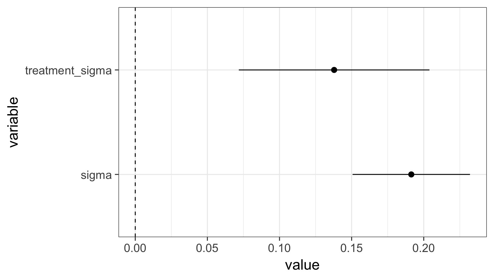
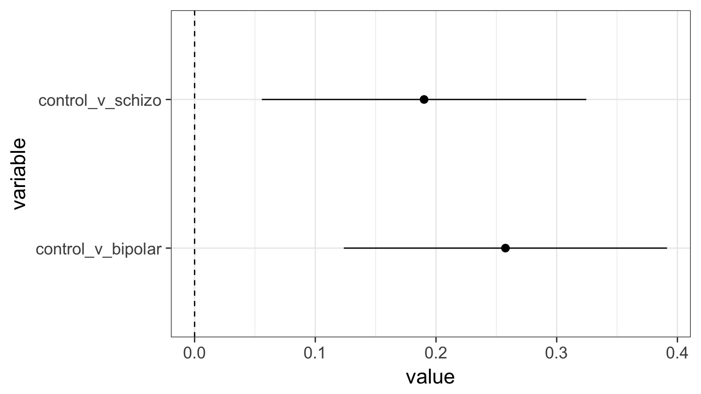

After the ANOVA
Outline
https://etherpad.wikimedia.org/p/607-anova- Beyond ANOVA: T and Posthoc Tests
- ANOVA in a Likelihood and Bayesian Context
Categorical Predictors: Gene Expression and Mental Disorders


The data

Comparison of Means

Means Model
\[\large y_{ij} = \mu + \alpha_{i} + \epsilon_{ij}, \qquad \epsilon_{ij} \sim N(0, \sigma^{2} )\]Questions we could ask
Does your model explain variation in the data?
Are your coefficients different from 0?
How much variation is retained by the model?
How confident can you be in model predictions?
Testing the Model
Ho = The model predicts no variation in the data.
Ha = The model predicts variation in the data.
F-Tests
F = Mean Square Variability Explained by Model / Mean Square Error
DF for Numerator = k-1 DF for Denominator = n-k
k = number of groups, n = sample size
Questions we could ask
- Does your model explain variation in the data?
- Are your coefficients different from 0?
- How much variation is retained by the model?
- How confident can you be in model predictions?
- Are groups different from each other
Questions we could ask
- Does your model explain variation in the data?
- Are your coefficients different from 0?
- How much variation is retained by the model?
- How confident can you be in model predictions?
- Are groups different from each other
ANOVA
| Df | Sum Sq | Mean Sq | F value | Pr(>F) | |
|---|---|---|---|---|---|
| group | 2 | 0.5402533 | 0.2701267 | 7.823136 | 0.0012943 |
| Residuals | 42 | 1.4502267 | 0.0345292 | NA | NA |
Questions we could ask
- Does your model explain variation in the data?
- Are your coefficients different from 0?
- How much variation is retained by the model?
- How confident can you be in model predictions?
- Are groups different from each other
Questions we could ask
- Does your model explain variation in the data?
- Are your coefficients different from 0?
- How much variation is retained by the model?
- How confident can you be in model predictions?
- Are groups different from each other
ANOVA, F, and T-Tests
| F-Tests | T-Tests |
|---|---|
| Tests if data generating process different than error | Tests if parameter is different from 0 |
Essentially comparing a variation explained by a model with versus without a data generating process included.
The Coefficients
| Estimate | Std. Error | t value | Pr(>|t|) | |
|---|---|---|---|---|
| (Intercept) | -0.0040000 | 0.0479786 | -0.0833705 | 0.9339531 |
| groupschizo | -0.1913333 | 0.0678520 | -2.8198628 | 0.0073015 |
| groupbipolar | -0.2586667 | 0.0678520 | -3.8122186 | 0.0004442 |
Treatment contrasts - set one group as a baseline
Useful with a control
Default “Treatment” Contrasts
schizo bipolar
control 0 0
schizo 1 0
bipolar 0 1Actual Group Means Compared to 0
| Estimate | Std. Error | t value | Pr(>|t|) | |
|---|---|---|---|---|
| groupcontrol | -0.0040000 | 0.0479786 | -0.0833705 | 0.9339531 |
| groupschizo | -0.1953333 | 0.0479786 | -4.0712586 | 0.0002022 |
| groupbipolar | -0.2626667 | 0.0479786 | -5.4746618 | 0.0000023 |
But which groups are different from each other?
Many T-tests….mutiple comparisons!
The Problem of Multiple Comparisons

Solutions to Multiple Comparisons and Family-wise Error Rate?
- Ignore it - a test is a test
- a priori contrasts
- Least Squares Difference test
- Lower your \(\alpha\) given m = # of comparisons
- Bonferroni \(\alpha/m\)
- False Discovery Rate \(k\alpha/m\) where k is rank of test
- Other multiple comparinson correction
- Tukey’s Honestly Significant Difference
ANOVA is an Omnibus Test
Remember your Null:
\[H_{0} = \mu_{1} = \mu{2} = \mu{3} = ...\]
This had nothing to do with specific comparisons of means.
A priori contrasts
Specific sets of a priori null hypotheses: \[\mu_{1} = \mu{2}\]
\[\mu_{1} = \mu{3} = ...\]
Use t-tests.
A priori contrasts
lm model parameter contrast
Contrast S.E. Lower Upper t df Pr(>|t|)
1 0.191 0.0679 0.0544 0.328 2.82 42 0.0073A priori contrasts
lm model parameter contrast
Contrast S.E. Lower Upper t df Pr(>|t|)
Control v. Schizo 0.191 0.0679 0.0544 0.328 2.82 42 0.0073
Control v. Bipolar 0.259 0.0679 0.1217 0.396 3.81 42 0.0004Note: can only do k-1, as each takes 1df
Orthogonal A priori contrasts
Sometimes you want to test very specific hypotheses about the structure of your groups
control schizo bipolar
Control v. Disorders 1 -0.5 -0.5
Bipolar v. Schizo 0 1.0 -1.0Note: can only do k-1, as each takes 1df
Orthogonal A priori contrasts with Grouping
Simultaneous Tests for General Linear Hypotheses
Fit: lm(formula = PLP1.expression ~ group, data = brainGene)
Linear Hypotheses:
Estimate Std. Error t value Pr(>|t|)
Control v. Disorders == 0 0.2210 0.1018 2.17 0.07 .
Bipolar v. Schizo == 0 0.0673 0.0679 0.99 0.54
---
Signif. codes: 0 '***' 0.001 '**' 0.01 '*' 0.05 '.' 0.1 ' ' 1
(Adjusted p values reported -- single-step method)Post hoc contrasts
I want to test all possible comparisons!
No Correction: Least Square Differences
pairwise.t.test(brainGene$PLP1.expression, brainGene$group,
p.adjust.method="none")
Pairwise comparisons using t tests with pooled SD
data: brainGene$PLP1.expression and brainGene$group
control schizo
schizo 0.007 -
bipolar 4e-04 0.327
P value adjustment method: none P-Value Adjustments
Bonferroni : \(\alpha_{adj} = \frac{\alpha}{m}\) where m = # of tests
- VERY conservative
False Discovery Rate: \(\alpha_{adj} = \frac{k\alpha}{m}\)
- Order your p values from smallest to largest, rank = k,
- Adjusts for small v. large p values
- Less conservative
Other Methods: Sidak, Dunn, Holm, etc.
We’re very focused on p here!
Bonferroni Corrections
pairwise.t.test(brainGene$PLP1.expression, brainGene$group,
p.adjust.method="bonferroni")
Pairwise comparisons using t tests with pooled SD
data: brainGene$PLP1.expression and brainGene$group
control schizo
schizo 0.022 -
bipolar 0.001 0.980
P value adjustment method: bonferroni FDR
pairwise.t.test(brainGene$PLP1.expression, brainGene$group,
p.adjust.method="fdr")
Pairwise comparisons using t tests with pooled SD
data: brainGene$PLP1.expression and brainGene$group
control schizo
schizo 0.011 -
bipolar 0.001 0.327
P value adjustment method: fdr Other Methods Use Critical Values
Tukey’s Honestly Significant Difference
Dunnet’s Test for Comparison to Controls
Ryan’s Q (sliding range)
etc…
Tukey’s Honestly Significant Difference
Tukey multiple comparisons of means
95% family-wise confidence level
Fit: aov(formula = PLP1.expression ~ group, data = brainGene)
$group
diff lwr upr p adj
schizo-control -0.1913 -0.356 -0.0265 0.020
bipolar-control -0.2587 -0.424 -0.0938 0.001
bipolar-schizo -0.0673 -0.232 0.0975 0.586Visualizing Comparisons

Final Notes of Caution
Often you DO have a priori contrasts in mind
If you reject Ho with ANOVA, differences between groups exist
Consider Type I v. Type II error before correcting
Outline
https://etherpad.wikimedia.org/p/607-anova- Beyond ANOVA: T and Posthoc Tests
- ANOVA in a Likelihood and Bayesian Context
Fitting an ANOVA model with Likelihood
brain_lik <- glm(PLP1.expression ~ group,
family=gaussian(),
data = brainGene)\(\chi^2\) LR Test and ANOVA
| LR Chisq | Df | Pr(>Chisq) | |
|---|---|---|---|
| group | 15.6 | 2 | 4e-04 |
Likelihood and Posthocs
Simultaneous Tests for General Linear Hypotheses
Multiple Comparisons of Means: Tukey Contrasts
Fit: lm(formula = PLP1.expression ~ group, data = brainGene)
Linear Hypotheses:
Estimate Std. Error t value Pr(>|t|)
schizo - control == 0 -0.1913 0.0679 -2.82 0.0196 *
bipolar - control == 0 -0.2587 0.0679 -3.81 0.0012 **
bipolar - schizo == 0 -0.0673 0.0679 -0.99 0.5857
---
Signif. codes: 0 '***' 0.001 '**' 0.01 '*' 0.05 '.' 0.1 ' ' 1
(Adjusted p values reported -- single-step method)BANOVA
SAMPLING FOR MODEL 'continuous' NOW (CHAIN 1).
Chain 1, Iteration: 1 / 2000 [ 0%] (Warmup)
Chain 1, Iteration: 200 / 2000 [ 10%] (Warmup)
Chain 1, Iteration: 400 / 2000 [ 20%] (Warmup)
Chain 1, Iteration: 600 / 2000 [ 30%] (Warmup)
Chain 1, Iteration: 800 / 2000 [ 40%] (Warmup)
Chain 1, Iteration: 1000 / 2000 [ 50%] (Warmup)
Chain 1, Iteration: 1001 / 2000 [ 50%] (Sampling)
Chain 1, Iteration: 1200 / 2000 [ 60%] (Sampling)
Chain 1, Iteration: 1400 / 2000 [ 70%] (Sampling)
Chain 1, Iteration: 1600 / 2000 [ 80%] (Sampling)
Chain 1, Iteration: 1800 / 2000 [ 90%] (Sampling)
Chain 1, Iteration: 2000 / 2000 [100%] (Sampling)
Elapsed Time: 0.080866 seconds (Warm-up)
0.08541 seconds (Sampling)
0.166276 seconds (Total)
SAMPLING FOR MODEL 'continuous' NOW (CHAIN 2).
Chain 2, Iteration: 1 / 2000 [ 0%] (Warmup)
Chain 2, Iteration: 200 / 2000 [ 10%] (Warmup)
Chain 2, Iteration: 400 / 2000 [ 20%] (Warmup)
Chain 2, Iteration: 600 / 2000 [ 30%] (Warmup)
Chain 2, Iteration: 800 / 2000 [ 40%] (Warmup)
Chain 2, Iteration: 1000 / 2000 [ 50%] (Warmup)
Chain 2, Iteration: 1001 / 2000 [ 50%] (Sampling)
Chain 2, Iteration: 1200 / 2000 [ 60%] (Sampling)
Chain 2, Iteration: 1400 / 2000 [ 70%] (Sampling)
Chain 2, Iteration: 1600 / 2000 [ 80%] (Sampling)
Chain 2, Iteration: 1800 / 2000 [ 90%] (Sampling)
Chain 2, Iteration: 2000 / 2000 [100%] (Sampling)
Elapsed Time: 0.068858 seconds (Warm-up)
0.063094 seconds (Sampling)
0.131952 seconds (Total)
SAMPLING FOR MODEL 'continuous' NOW (CHAIN 3).
Chain 3, Iteration: 1 / 2000 [ 0%] (Warmup)
Chain 3, Iteration: 200 / 2000 [ 10%] (Warmup)
Chain 3, Iteration: 400 / 2000 [ 20%] (Warmup)
Chain 3, Iteration: 600 / 2000 [ 30%] (Warmup)
Chain 3, Iteration: 800 / 2000 [ 40%] (Warmup)
Chain 3, Iteration: 1000 / 2000 [ 50%] (Warmup)
Chain 3, Iteration: 1001 / 2000 [ 50%] (Sampling)
Chain 3, Iteration: 1200 / 2000 [ 60%] (Sampling)
Chain 3, Iteration: 1400 / 2000 [ 70%] (Sampling)
Chain 3, Iteration: 1600 / 2000 [ 80%] (Sampling)
Chain 3, Iteration: 1800 / 2000 [ 90%] (Sampling)
Chain 3, Iteration: 2000 / 2000 [100%] (Sampling)
Elapsed Time: 0.054466 seconds (Warm-up)
0.096178 seconds (Sampling)
0.150644 seconds (Total)
SAMPLING FOR MODEL 'continuous' NOW (CHAIN 4).
Chain 4, Iteration: 1 / 2000 [ 0%] (Warmup)
Chain 4, Iteration: 200 / 2000 [ 10%] (Warmup)
Chain 4, Iteration: 400 / 2000 [ 20%] (Warmup)
Chain 4, Iteration: 600 / 2000 [ 30%] (Warmup)
Chain 4, Iteration: 800 / 2000 [ 40%] (Warmup)
Chain 4, Iteration: 1000 / 2000 [ 50%] (Warmup)
Chain 4, Iteration: 1001 / 2000 [ 50%] (Sampling)
Chain 4, Iteration: 1200 / 2000 [ 60%] (Sampling)
Chain 4, Iteration: 1400 / 2000 [ 70%] (Sampling)
Chain 4, Iteration: 1600 / 2000 [ 80%] (Sampling)
Chain 4, Iteration: 1800 / 2000 [ 90%] (Sampling)
Chain 4, Iteration: 2000 / 2000 [100%] (Sampling)
Elapsed Time: 0.079157 seconds (Warm-up)
0.088166 seconds (Sampling)
0.167323 seconds (Total)brain_bayes <- stan_glm(PLP1.expression ~ group - 1,
family=gaussian(),
data = brainGene)
SAMPLING FOR MODEL 'continuous' NOW (CHAIN 1).
Chain 1, Iteration: 1 / 2000 [ 0%] (Warmup)
Chain 1, Iteration: 200 / 2000 [ 10%] (Warmup)
Chain 1, Iteration: 400 / 2000 [ 20%] (Warmup)
Chain 1, Iteration: 600 / 2000 [ 30%] (Warmup)
Chain 1, Iteration: 800 / 2000 [ 40%] (Warmup)
Chain 1, Iteration: 1000 / 2000 [ 50%] (Warmup)
Chain 1, Iteration: 1001 / 2000 [ 50%] (Sampling)
Chain 1, Iteration: 1200 / 2000 [ 60%] (Sampling)
Chain 1, Iteration: 1400 / 2000 [ 70%] (Sampling)
Chain 1, Iteration: 1600 / 2000 [ 80%] (Sampling)
Chain 1, Iteration: 1800 / 2000 [ 90%] (Sampling)
Chain 1, Iteration: 2000 / 2000 [100%] (Sampling)
Elapsed Time: 1.34429 seconds (Warm-up)
0.844418 seconds (Sampling)
2.18871 seconds (Total)
SAMPLING FOR MODEL 'continuous' NOW (CHAIN 2).
Chain 2, Iteration: 1 / 2000 [ 0%] (Warmup)
Chain 2, Iteration: 200 / 2000 [ 10%] (Warmup)
Chain 2, Iteration: 400 / 2000 [ 20%] (Warmup)
Chain 2, Iteration: 600 / 2000 [ 30%] (Warmup)
Chain 2, Iteration: 800 / 2000 [ 40%] (Warmup)
Chain 2, Iteration: 1000 / 2000 [ 50%] (Warmup)
Chain 2, Iteration: 1001 / 2000 [ 50%] (Sampling)
Chain 2, Iteration: 1200 / 2000 [ 60%] (Sampling)
Chain 2, Iteration: 1400 / 2000 [ 70%] (Sampling)
Chain 2, Iteration: 1600 / 2000 [ 80%] (Sampling)
Chain 2, Iteration: 1800 / 2000 [ 90%] (Sampling)
Chain 2, Iteration: 2000 / 2000 [100%] (Sampling)
Elapsed Time: 0.917152 seconds (Warm-up)
1.10817 seconds (Sampling)
2.02533 seconds (Total)
SAMPLING FOR MODEL 'continuous' NOW (CHAIN 3).
Chain 3, Iteration: 1 / 2000 [ 0%] (Warmup)
Chain 3, Iteration: 200 / 2000 [ 10%] (Warmup)
Chain 3, Iteration: 400 / 2000 [ 20%] (Warmup)
Chain 3, Iteration: 600 / 2000 [ 30%] (Warmup)
Chain 3, Iteration: 800 / 2000 [ 40%] (Warmup)
Chain 3, Iteration: 1000 / 2000 [ 50%] (Warmup)
Chain 3, Iteration: 1001 / 2000 [ 50%] (Sampling)
Chain 3, Iteration: 1200 / 2000 [ 60%] (Sampling)
Chain 3, Iteration: 1400 / 2000 [ 70%] (Sampling)
Chain 3, Iteration: 1600 / 2000 [ 80%] (Sampling)
Chain 3, Iteration: 1800 / 2000 [ 90%] (Sampling)
Chain 3, Iteration: 2000 / 2000 [100%] (Sampling)
Elapsed Time: 0.95174 seconds (Warm-up)
0.753277 seconds (Sampling)
1.70502 seconds (Total)
SAMPLING FOR MODEL 'continuous' NOW (CHAIN 4).
Chain 4, Iteration: 1 / 2000 [ 0%] (Warmup)
Chain 4, Iteration: 200 / 2000 [ 10%] (Warmup)
Chain 4, Iteration: 400 / 2000 [ 20%] (Warmup)
Chain 4, Iteration: 600 / 2000 [ 30%] (Warmup)
Chain 4, Iteration: 800 / 2000 [ 40%] (Warmup)
Chain 4, Iteration: 1000 / 2000 [ 50%] (Warmup)
Chain 4, Iteration: 1001 / 2000 [ 50%] (Sampling)
Chain 4, Iteration: 1200 / 2000 [ 60%] (Sampling)
Chain 4, Iteration: 1400 / 2000 [ 70%] (Sampling)
Chain 4, Iteration: 1600 / 2000 [ 80%] (Sampling)
Chain 4, Iteration: 1800 / 2000 [ 90%] (Sampling)
Chain 4, Iteration: 2000 / 2000 [100%] (Sampling)
Elapsed Time: 1.10924 seconds (Warm-up)
2.09969 seconds (Sampling)
3.20893 seconds (Total)BANOVA
stan_glm(formula = PLP1.expression ~ group - 1, family = gaussian(),
data = brainGene)
Family: gaussian (identity)
Algorithm: sampling
Posterior sample size: 4000
Observations: 45
Estimates:
mean sd 5% 10% 50% 90% 95%
groupcontrol 0.00 0.05 -0.08 -0.07 0.00 0.06 0.08
groupschizo -0.19 0.05 -0.27 -0.26 -0.19 -0.13 -0.12
groupbipolar -0.26 0.05 -0.34 -0.32 -0.26 -0.20 -0.18
sigma 0.19 0.02 0.16 0.17 0.19 0.22 0.23
mean_PPD -0.15 0.04 -0.22 -0.20 -0.15 -0.10 -0.09
log-posterior 4.22 1.37 1.57 2.40 4.55 5.65 5.81
Diagnostics:
mcse Rhat n_eff
groupcontrol 0.00 1.00 3252
groupschizo 0.00 1.00 3444
groupbipolar 0.00 1.00 3646
sigma 0.00 1.00 3137
mean_PPD 0.00 1.00 3737
log-posterior 0.03 1.00 2171
For each parameter, mcse is Monte Carlo standard error, n_eff is a crude measure of effective sample size, and Rhat is the potential scale reduction factor on split chains (at convergence Rhat=1).BANOVA
10% 90%
groupcontrol -0.066 0.058
groupschizo -0.255 -0.134
groupbipolar -0.322 -0.202
sigma 0.167 0.218What are the sources of variation from the model?
- We can look at the SD between means from a set of categorical predictors
- This SD tells us how much variability is driven by a set of treatments
- Not directly comparable to MSE for comparison to sigma.
- Given units of response variable, is the variability meaningful?
What are the sources of variation from the model?

Are Groups Different?

Are Groups Different?
Control v. Schizo 0% 25% 50% 75% 100%
-0.054 0.146 0.189 0.234 0.489
Control v. Bipolar 0% 25% 50% 75% 100%
0.021 0.214 0.258 0.301 0.531 Alternate methods
- Likelihood uses \(\chi^2\), but other methods are identical to least squares
- Bayesian methods conservative, but use chains for identical inferences to ANOVA
- Sidenote: Bayesian methods are less likely to commit type II errors